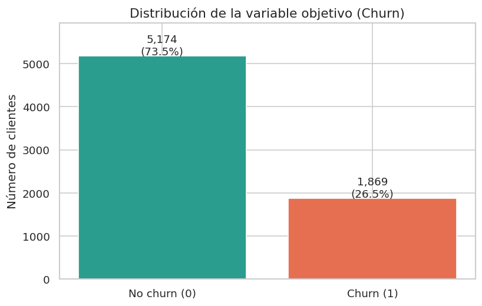
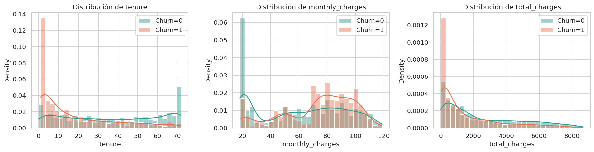
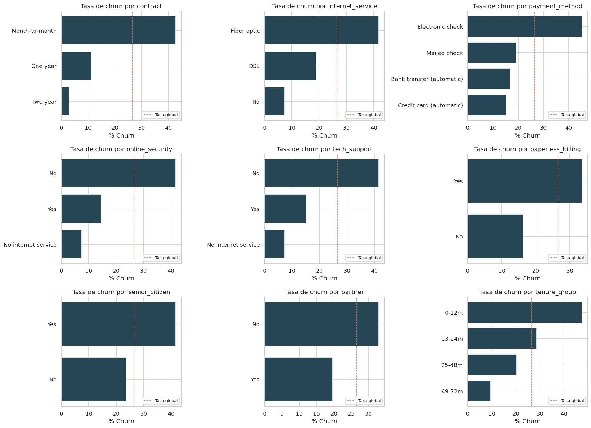
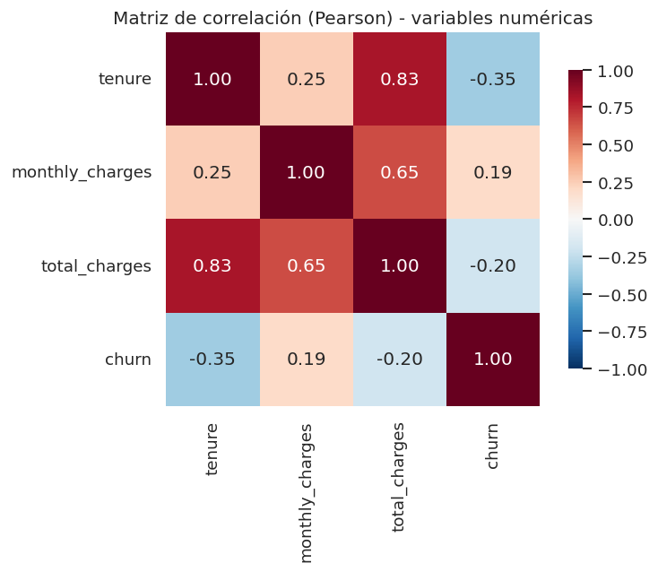
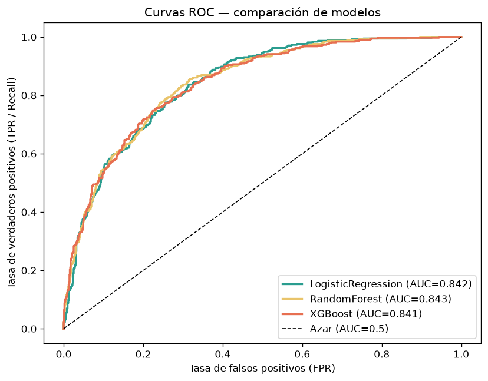
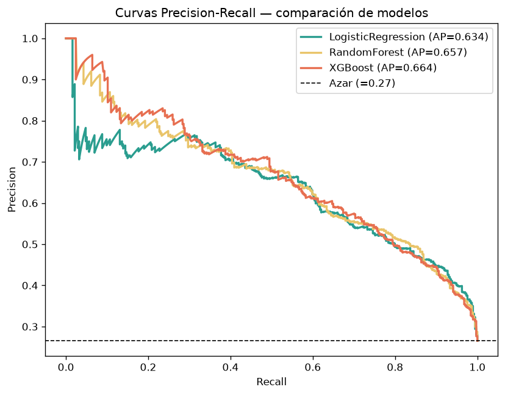
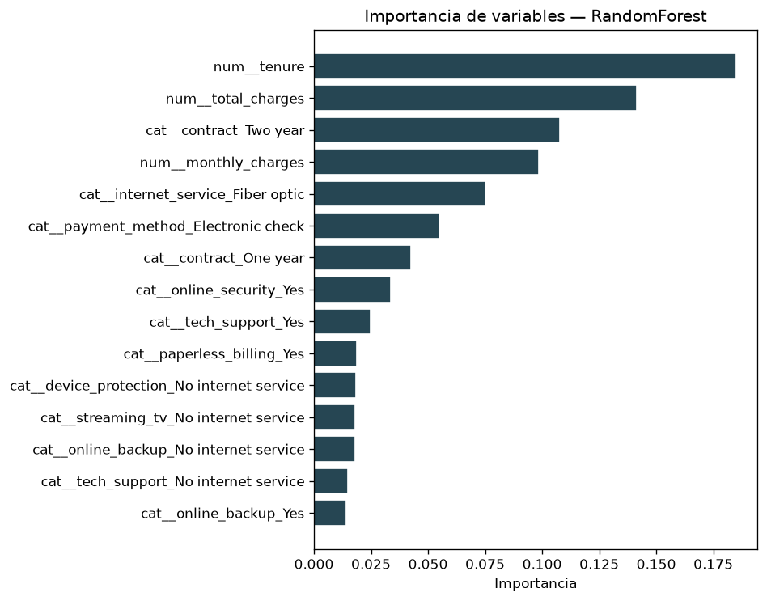
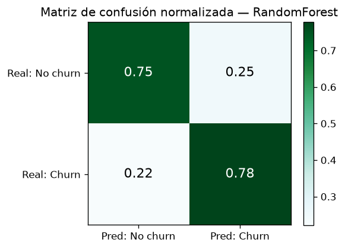
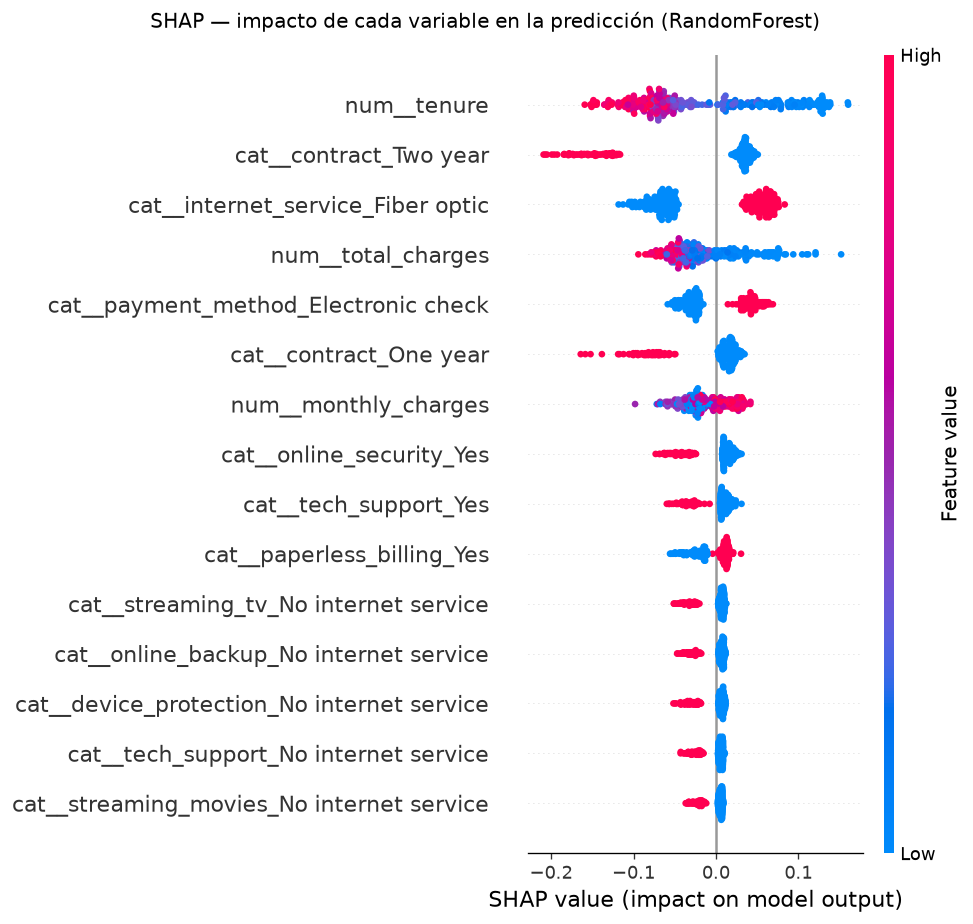
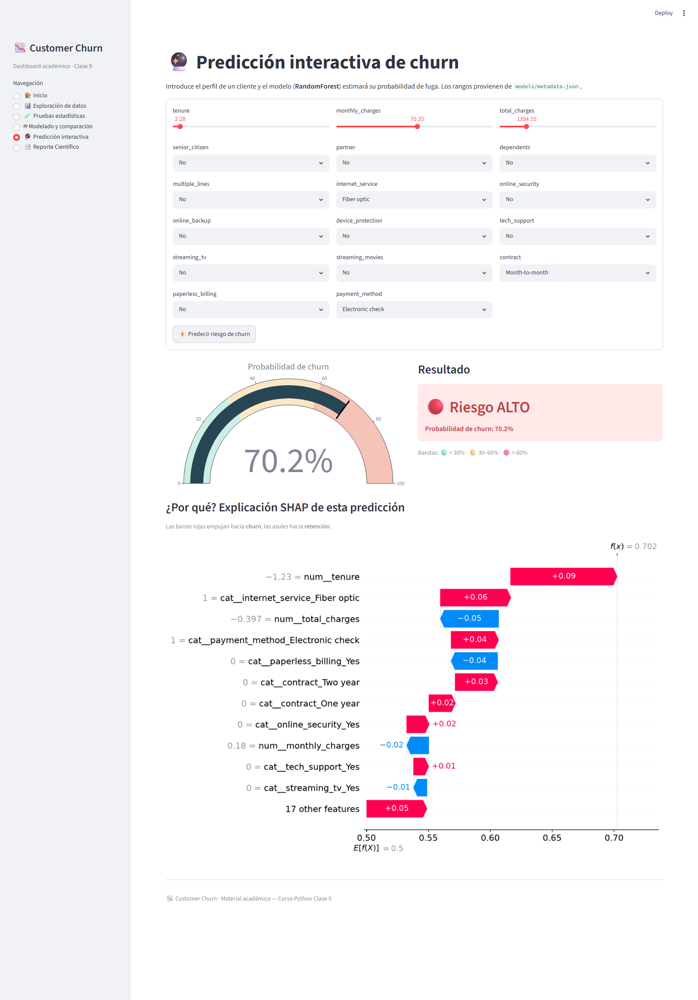

Proyecto: Telco Customer Churn · Curso Python — Clase 9
Modelo de producción: RandomForest (class_weight='balanced', max_depth=10, n_estimators=400, min_samples_split=10)
Semilla global: RANDOM_STATE = 42
Fecha: 2026-06-27
Una empresa de telecomunicaciones pierde clientes (churn) a un ritmo del 26.5 % (1,869 de 7,043 clientes). Como retener es entre 5 y 25 veces más barato que adquirir, anticipar quién se irá y por qué permite enfocar campañas de retención en lugar de actuar a ciegas.
Tras un análisis exploratorio (EDA) y pruebas estadísticas formales (notebook 01_etl_eda.ipynb), se entrenaron y compararon tres modelos de clasificación (notebook 02_modeling.ipynb): Regresión Logística, Random Forest y XGBoost, optimizando como métrica principal el F1 de la clase churn (clase positiva, minoritaria y desbalanceada).
El modelo seleccionado para producción es Random Forest, con los siguientes resultados sobre el conjunto de prueba (20 % no visto, split estratificado):
| Métrica | Valor |
|---|---|
| F1 (churn) | 0.631 |
| Recall (churn) | 0.778 |
| Precision (churn) | 0.530 |
| PR-AUC | 0.657 |
| ROC-AUC | 0.843 |
| Accuracy | 0.758 |
El modelo identifica ~78 % de los clientes que efectivamente se van (recall), lo que habilita priorización de retención sobre el segmento de mayor riesgo. Los principales motores de fuga son el tipo de contrato, la antigüedad (tenure) y la ausencia de servicios de soporte/seguridad.
📌 Nota metodológica (honestidad científica). RandomForest lidera en F1, pero XGBoost obtiene mayor PR-AUC y Recall; la diferencia en F1 es muy pequeña (Δ = 0.0102). La elección de RF se justifica por interpretabilidad pedagógica, no por superioridad estadística contundente. Ver §5 para el texto literal.
Las tres hipótesis del proyecto (H1: contrato, H2: antigüedad, H3: soporte) quedaron validadas con evidencia estadística y de importancia de variables.
Una compañía de telecomunicaciones (telco) quiere anticipar qué clientes están a punto de darse de baja para intervenir con campañas de retención dirigidas. El churn es un problema de negocio crítico: el costo de adquirir un cliente nuevo supera ampliamente el de retener uno existente, por lo que cada punto de churn evitado tiene impacto directo en los ingresos recurrentes.
| ID | Hipótesis | Métrica/Prueba de validación |
|---|---|---|
| H1 | El tipo de contrato influye en el churn | Chi² + Cramér's V; importancia en el modelo |
| H2 | A menor antigüedad (tenure), mayor churn | Mann-Whitney / Welch; importancia numérica |
| H3 | La falta de servicios de soporte aumenta el churn | Chi² + Cramér's V sobre online_security, tech_support |
Dado que la clase de interés (churn = 1) es minoritaria (~26.5 %), la accuracy es engañosa. Se optimiza el F1 de la clase churn, que equilibra precision y recall, y se reporta además PR-AUC (más informativa que ROC-AUC en problemas desbalanceados) y recall (coste de no detectar a un cliente que se va).
El dataset Telco Customer Churn contiene 7,043 clientes y 21 variables originales (más tenure_group, derivada en feature engineering). El objetivo es la variable binaria churn.
| Aspecto | Resultado | Acción |
|---|---|---|
| Registros | 7,043 | — |
| Variables | 21 originales + 1 derivada (tenure_group) |
— |
| Duplicados | 0 | — |
| Nulos (tras limpieza) | 0 | — |
TotalCharges no numérico |
11 registros (espacios en blanco) | Coerción a numérico + imputación |
Clientes con tenure = 0 |
11 (0.156 % del dataset) | TotalCharges imputado a 0.0 |
Variable objetivo churn |
26.5 % positivos (1,869) | Clase desbalanceada → class_weight='balanced' |
TotalCharges = 0.0Los 11 clientes con tenure = 0 corresponden a altas recientes que aún no han generado un ciclo de facturación; su TotalCharges viene como cadena vacía en el CSV original. Se imputó TotalCharges = 0.0 porque es la interpretación semánticamente correcta: un cliente con cero meses de antigüedad no ha acumulado cargos totales.
Alternativa descartada — eliminar las filas: se evaluó eliminar esos 11 registros, pero se descartó porque sesgaría la muestra de clientes nuevos (tenure bajo), justamente el segmento de mayor churn (47.4 % en 0–12 meses) y el más relevante para el negocio. Eliminarlos empobrecería el aprendizaje del modelo sobre el perfil de alto riesgo. Al representar < 0.2 % del dataset, la imputación a 0.0 es de impacto despreciable y no introduce ruido.
Distribución del objetivo — el dataset está desbalanceado (~73.5 % no churn / 26.5 % churn):

Figura 1. Distribución de la variable objetivo: ~73.5 % de clientes retenidos frente a ~26.5 % que abandonan.Distribuciones numéricas — tenure, monthly_charges y total_charges segmentadas por churn:

Figura 2. Los clientes que se van concentran tenure bajo y cargos mensuales altos.Tasa de churn por categoría — evidencia visual de qué categorías disparan la fuga:

Figura 3. Tasa de churn por categoría: contrato mensual, fibra óptica y pago electronic check destacan.Correlación entre numéricas — tenure y total_charges están fuertemente correlacionadas (≈0.83):

Figura 4. Heatmap de correlación. La alta correlación tenure↔total_charges (VIF≈9.5) se conserva: los árboles son inmunes a multicolinealidad y la regresión está regularizada.Tasas de churn observadas (datos limpios):
| Variable | Categoría | Tasa de churn |
|---|---|---|
contract |
Month-to-month | 42.7 % |
contract |
One year | 11.3 % |
contract |
Two year | 2.8 % |
tenure_group |
0–12 m | 47.4 % |
tenure_group |
49–72 m | 9.5 % |
internet_service |
Fiber optic | 41.9 % |
internet_service |
DSL | 19.0 % |
tech_support |
No | 41.6 % |
tech_support |
Yes | 15.2 % |
payment_method |
Electronic check | 45.3 % |
src/data_cleaning.py)TotalCharges a numérico e imputación de los 11 tenure = 0 a 0.0 (§3.3).tenure_group (0–12 m, 13–24 m, 25–48 m, 49–72 m).Se descartaron gender y phone_service por resultar no significativas en las pruebas Chi² (p > 0.05, Cramér's V ≈ 0.01), evitando ruido sin pérdida de señal.
churn para preservar la proporción de clases (26.5 %) en ambos conjuntos.random_state = 42 en todo el pipeline (reproducibilidad).Se usa un Pipeline de scikit-learn con ColumnTransformer:
tenure, monthly_charges, total_charges): estandarización (StandardScaler).OneHotEncoder(handle_unknown='ignore').models/best_model.pkl.Semilla 42 fijada en split, validación cruzada y modelos. Artefactos versionados: best_model.pkl, metadata.json, model_comparison.json.
Tres algoritmos entrenados sobre el mismo split y pipeline:
class_weight='balanced') — baseline lineal interpretable.class_weight='balanced') — ensemble de árboles, robusto a multicolinealidad.| Modelo | F1 (churn) | Recall | Precision | PR-AUC | ROC-AUC | Accuracy |
|---|---|---|---|---|---|---|
| LogisticRegression | 0.6144 | 0.7861 | 0.5043 | 0.6338 | 0.8421 | 0.7381 |
| 🏆 RandomForest | 0.6306 | 0.7781 | 0.5301 | 0.6574 | 0.8426 | 0.7580 |
| XGBoost | 0.6204 | 0.7888 | 0.5113 | 0.6640 | 0.8414 | 0.7438 |
(Negritas = mejor valor por columna.)
GridSearchCV/RandomizedSearchCV) con validación cruzada estratificada sobre train, optimizando F1 de churn.{
"n_estimators": 400,
"max_depth": 10,
"min_samples_split": 10,
"class_weight": "balanced"
}

Figura 5. Curvas ROC. Los tres modelos son prácticamente equivalentes en ROC-AUC (≈0.842).
Figura 6. Curvas Precision-Recall. XGBoost lidera en PR-AUC (0.664), seguido de RandomForest (0.657); ambas muy por encima del azar (0.265).El siguiente texto se reproduce verbatim desde models/model_comparison.json['methodological_note'] y se muestra idéntico en el dashboard (página Modelado) y en este reporte:
RandomForest se eligió como modelo de producción por liderar en F1(clase=1), métrica principal del proyecto. Sin embargo, XGBoost obtiene mayor PR-AUC y Recall, métricas también relevantes en clasificación con clases desbalanceadas. La diferencia en F1 entre ambos (Δ=0.0102) es estadísticamente muy pequeña; en producción se recomendaría validar la elección con un segundo split o con bootstrap. Este proyecto opta por RF por su mejor interpretabilidad pedagógica.

Figura 7. Importancia de variables (RandomForest). Lideran tenure, total_charges, contract_Two year, monthly_charges y internet_service_Fiber optic.| # | Variable | Importancia |
|---|---|---|
| 1 | tenure |
0.185 |
| 2 | total_charges |
0.141 |
| 3 | contract_Two year |
0.108 |
| 4 | monthly_charges |
0.099 |
| 5 | internet_service_Fiber optic |
0.075 |
| 6 | payment_method_Electronic check |
0.055 |
| 7 | contract_One year |
0.043 |
| 8 | online_security_Yes |
0.034 |
| 9 | tech_support_Yes |
0.025 |

Figura 8. Matriz de confusión sobre 1,409 clientes de test.| Pred: No churn | Pred: Churn | |
|---|---|---|
| Real: No churn | 777 (TN) | 258 (FP) |
| Real: Churn | 83 (FN) | 291 (TP) |

Figura 9. SHAP summary. tenure bajo, contrato mensual, fibra óptica y ausencia de soporte empujan la predicción hacia churn.El dashboard incluye explicaciones SHAP por cliente (waterfall). Para un cliente de alto riesgo (mes-a-mes, tenure ≈ 2, fibra óptica, sin soporte, electronic check) la probabilidad estimada es 70.2 % → 🔴 Riesgo ALTO, con tenure bajo y internet_service_Fiber optic como principales impulsores de fuga:

Figura 10. Página de predicción del dashboard: gauge en rojo (70.2 %) y waterfall SHAP del cliente.| ID | Hipótesis | Estado | Evidencia |
|---|---|---|---|
| H1 | El contrato influye en el churn | ✅ Validada | contract es la categórica #1 (Cramér's V = 0.41); churn M2M 42.7 % vs Two year 2.8 % |
| H2 | Menor tenure → mayor churn | ✅ Validada | tenure es la numérica más importante (0.185); 0–12 m → 47.4 % churn |
| H3 | Falta de soporte → mayor churn | ✅ Validada | online_security y tech_support significativas (Chi²); tech_support No → 41.6 % churn |
1) ¿Qué tipo de clientes tienen más probabilidad de irse? Perfil de alto riesgo: contrato mes-a-mes, antigüedad baja (0–12 meses, churn ≈ 47 %), fibra óptica (churn ≈ 42 %), sin seguridad online ni soporte técnico, y pago por electronic check (churn ≈ 45 %).
2) ¿El contrato mensual vs anual afecta la retención? Drásticamente. El churn pasa de 42.7 % en contratos mes-a-mes a 2.8 % en contratos a dos años — una diferencia de ~40 puntos. El contrato es el factor protector más fuerte del modelo.
3) Recomendaciones accionables (ver §7.2).
TotalCharges: 11 clientes con tenure = 0 imputados a 0.0 (< 0.2 %); razonable pero es un supuesto.Estructura del proyecto:
customer_churn_project/
├── data/
│ ├── raw/ # CSV original
│ └── processed/churn_clean.csv # dataset limpio
├── src/
│ ├── data_loader.py # carga
│ ├── data_cleaning.py # limpieza + feature engineering
│ ├── data_quality.py # reporte de calidad
│ ├── eda.py # gráficos EDA
│ ├── stats_tests.py # Shapiro, Levene, Welch, Mann-Whitney, Chi², Cramér's V
│ └── modeling.py # pipeline, entrenamiento, comparación
├── notebooks/
│ ├── 01_etl_eda.ipynb # ETL + EDA + pruebas estadísticas
│ └── 02_modeling.ipynb # modelado + comparación + artefactos
├── models/
│ ├── best_model.pkl # pipeline ganador (RandomForest)
│ ├── metadata.json # features, rangos, hiperparámetros, métricas
│ └── model_comparison.json # métricas 3 modelos, curvas, nota metodológica
├── app/dashboard.py # dashboard Streamlit (6 páginas)
└── reports/
├── report.md / report.pdf # este documento
└── figures/ # figuras de notebooks + dashboard/
Reproducir (ver checklist en README.md → Verificación):
pip install -r requirements.txt
jupyter nbconvert --to notebook --execute notebooks/01_etl_eda.ipynb
jupyter nbconvert --to notebook --execute notebooks/02_modeling.ipynb
streamlit run app/dashboard.py
Figuras de análisis (reports/figures/):
| Fig. | Archivo | Contenido |
|---|---|---|
| 1 | 01_target_distribution.png |
Distribución del objetivo churn |
| 2 | 02_numeric_distributions.png |
Distribuciones numéricas por churn |
| 3 | 03_churn_rate_by_category.png |
Tasa de churn por categoría |
| 4 | 04_correlation_heatmap.png |
Correlación entre numéricas |
| 5 | 06_roc_curves.png |
Curvas ROC (3 modelos) |
| 6 | 07_pr_curves.png |
Curvas Precision-Recall (3 modelos) |
| 7 | 05_feature_importance.png |
Importancia de variables (RF) |
| 8 | 08_confusion_matrix.png |
Matriz de confusión (RF) |
| 9 | 09_shap_summary.png |
SHAP summary |
Capturas del dashboard (reports/figures/dashboard/):
| Archivo | Página |
|---|---|
01_inicio.png |
Inicio / KPIs |
02_exploracion.png |
Exploración de datos |
03_pruebas_estadisticas.png |
Pruebas estadísticas |
04_modelado.png |
Modelado y comparación |
05_prediccion.png |
Predicción interactiva (Fig. 10) |
06_reporte_cientifico.png |
Reporte científico |
Material académico — Curso Python Clase 9. Generado el 2026-06-27.